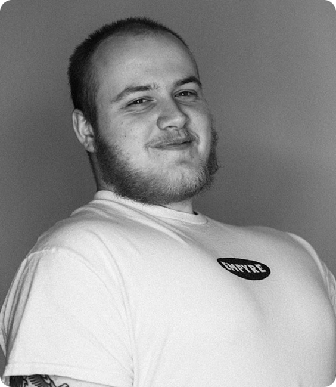

More about Me!
Hi, I'm Jared Russell, a Digital Design student at Ulster University.
User interaction and branding are what I'm most passionate about, and I'm looking for a design role that prioritises creativity and innovation.
Apart from designing, I love researching design trends, exploring digital spaces and enjoying a good cup of coffee.
Location
Belfast is home, but I'm open to opportunities anywhere!

Design Philosophy
As I keep learning, both as a designer and as a person, my design philosophy will evolve with me.
Right now, I believe design should be accessible to everyone. With every project, I push the work further by asking: how can I improve this, and what did I learn?
Every project, especially in UI/UX design, should be backed by research, with constant feedback and ideation throughout.
Working with others matters to me too. Collaboration pushes designers to do their best and keeps the work accountable and high quality.
Let's work together!
Whether you're hiring or have a project in mind, I'd love to hear from you. You'll find my skills and experience on my CV.